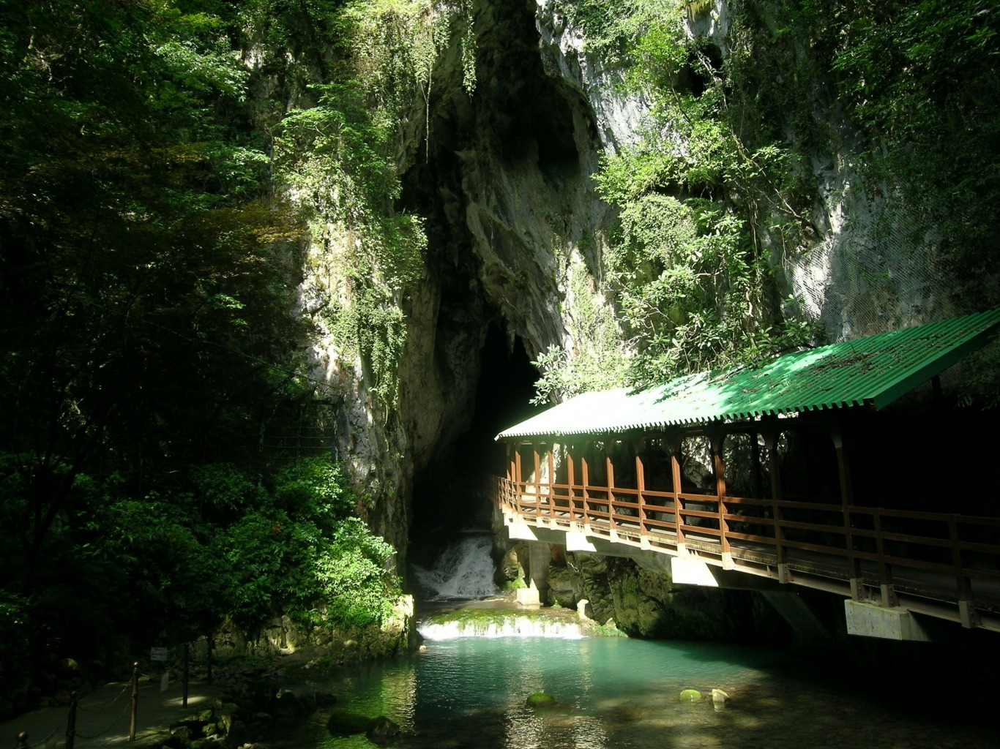
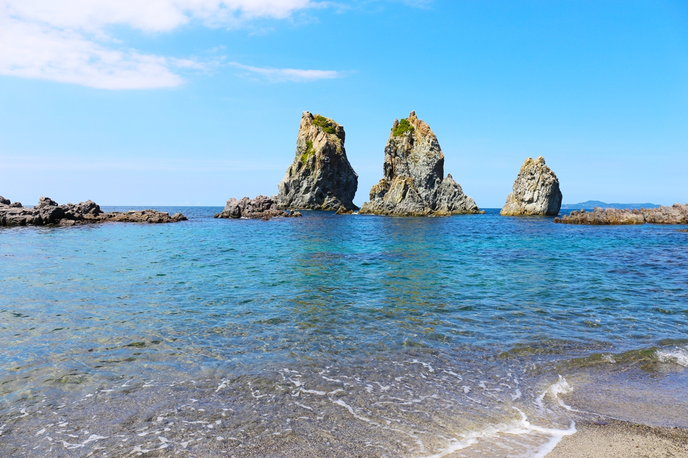

Yamaguchi is located on the westernmost of the main island of Japan, bordering Hiroshima and Shimane on the east and Fukuoka of Kyushu on the west.
Yamaguchi's three sides are surrounded by the sea ―Japan Sea, Seto Inland Sea, Sea of Hibiki, and its long coastal line of about 1,500 km shows various expressions such as emerald green ocean and beautiful sandy beaches, superb view of cliffs and oddly-shaped rocks eroded by raging waves, and appeasing sceneries of small islands in the sea. (Source: Yamaguchi Official Tourism Site)
Prefecture Image
Akiyoshi Cave
What is Yamaguchi?
Omijima Island
